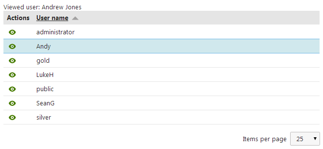
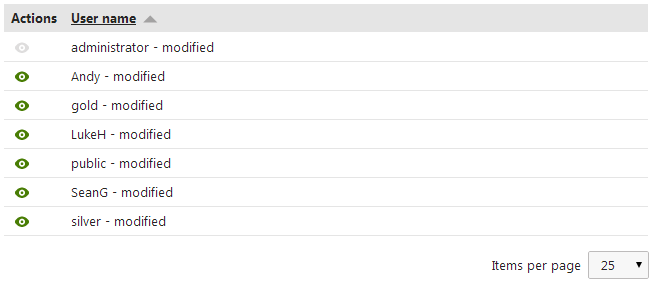

UniGrid
The UniGrid is a user control that displays data in a highly customizable and flexible table. Also provides many additional features:
Built-in support for loading and displaying Kentico data
Ordering
Filtering
Paging
Row selection
Predefined or custom action buttons for rows
Transformations of the data displayed in columns
The UniGrid is used extensively in the Kentico administration interface. You can only use the UniGrid within Kentico web projects, but it is possible to display data from external data sources.
Note: Using the UniGrid control beyond its most basic functions requires knowledge of programming and the Kentico API.
Getting started
The following is a step-by-step tutorial that shows how to display a table containing all users from the Kentico database using the UniGrid control, and implement a custom action button:
Create a Web form named User_UniGrid.aspx in your web project (the code in the example assumes that you add the file into a subfolder named UniGridExample).
Add the following directives to the beginning of the web form's markup to register the UniGrid control:
<%@ Register src="~/CMSAdminControls/UI/UniGrid/UniGrid.ascx"tagname="UniGrid"tagprefix="cms"%><%@ Register Namespace="CMS.UIControls.UniGridConfig"TagPrefix="ug"Assembly="CMS.UIControls"%>Add the following code into the content area of the page (inside the <form> element):
<divclass="cms-bootstrap"><asp:ScriptManager ID="manScript"runat="server"ScriptMode="Release"EnableViewState="false"/><asp:Label runat="server"ID="lblInfo"EnableViewState="false"Visible="false"/><cms:UniGrid ID="UserGrid"runat="server"/></div>This adds the following controls:
The ScriptManager control is required by the UniGrid control. The sample code manually adds the script manager to be functional as a standalone example. The ScriptManager is typically included on your website's master page, so you do not need to add it in real-world scenarios.
A standard Label that will be used to display information messages. The label is not necessary for the functioning of the UniGrid, but can be very convenient, for example to display error messages.
The UniGrid control itself (without any configuration for now).
The cms-bootstrap class is required if you wish to use the default UniGrid styles (including font icons).
Extend the definition of the UniGrid control according to the markup below:
<cms:UniGrid ID="UserGrid"runat="server"ObjectType="cms.user"Columns="UserID, UserName"OrderBy="UserName"><GridActions><ug:Action Name="view"Caption="$General.View$"FontIconClass="icon-eye"FontIconStyle="allow"/></GridActions><GridColumns><ug:Column Source="UserName"Caption="$general.username$"Width="100%"/></GridColumns></cms:UniGrid>The basic configuration example above defines a single action (view) and one column containing user names. The control retrieves the data from user objects, which is achieved by setting the ObjectType property to cms.user.
For more details and a full account of the configuration options you can specify for the UniGrid, see:
Switch to the web form's code behind (User_UniGrid.aspx.cs) and add the following code:
Note: Adjust the name of the class according to the location of your web form.
usingSystem;usingCMS.Helpers;usingCMS.Membership;usingCMS.Base.Web.UI;publicpartialclassUniGridExample_User_UniGrid : System.Web.UI.Page{protectedvoidPage_Load(objectsender, EventArgs e){// Registers the default CSS and JavaScript files onto the page (used to style the UniGrid)CssRegistration.RegisterBootstrap(Page);ScriptHelper.RegisterBootstrapScripts(Page);// Assigns a handler for the OnAction eventUserGrid.OnAction += userGrid_OnAction;}/// <summary>// Handles the UniGrid's OnAction event./// </summary>protectedvoiduserGrid_OnAction(stringactionName,objectactionArgument){// Implements the logic of the view actionif(actionName =="view"){// Stores the values of the actionArgument argument (UserID)intuserId = ValidationHelper.GetInteger(actionArgument, 0);// Gets a UserInfo object representing the user with the given IDUserInfo ui = UserInfoProvider.GetUserInfo(userId);// If the user existsif(ui !=null){// Sets the information label to display the full name of the viewed userlblInfo.Visible =true;lblInfo.Text ="Viewed user: "+ HTMLHelper.HTMLEncode(ui.FullName);}}}}This code demonstrates how to implement the logic of a UniGrid action. OnAction event handlers have the following parameters:
string actionName - identifies which action raised the event. This example only has one action, but the UniGrid control often contains more in real scenarios. The name passed into the parameter is set through the UniGrid's definition in the Name attribute of individual Action elements.
object actionArgument - passes the value of a data source column from the UniGrid row for which the action was used. The column can be specified through the configuration in the commandargument attribute of individual Action elements, otherwise the first column in the data source is used by default.
This example only displays the full name of the viewed user in the label above the UniGrid when the view button is clicked. You can implement any required action in a similar fashion.
Save the web form and its code behind file.
Right-click the web form in the Solution explorer and select View in Browser.
The resulting page displays a table containing user names and view action buttons. If you click the view action, the full name of the user on the given row appears above the grid.

Implementing custom functionality
The following tutorial extends the example in the Getting started section. This section demonstrates how to add custom functionality to action buttons and columns using handlers of the OnExternalDataBound event:
Open the web form from the previous section and its code behind file.
Modify the UniGrid control's definition as shown in the following markup:
<cms:UniGridID="UserGrid"runat="server"ObjectType="cms.user"Columns="UserID, UserName"OrderBy="UserName"><GridActions><ug:ActionName="view"Caption="$General.View$"FontIconClass="icon-eye"FontIconStyle="allow"ExternalSourceName="view_modify"/></GridActions><GridColumns><ug:ColumnSource="UserName"Caption="$general.username$"Width="100%"ExternalSourceName="user_modify"/></GridColumns></cms:UniGrid>This defines the ExternalSourceName attributes that identify actions or columns in the OnExternalDataBound handler, where the required custom functionality is implemented.
Switch to the code behind file and add a using statement for the System.Data namespace:
usingSystem.Data;Extend the Page_Load method to assign a handler to the UniGrid's OnExternalDataBound event:
protectedvoidPage_Load(objectsender, EventArgs e){// Registers the default CSS and JavaScript files onto the page (used to style the UniGrid)CssRegistration.RegisterBootstrap(Page);ScriptHelper.RegisterBootstrapScripts(Page);// Assigns a handler for the OnAction eventUserGrid.OnAction += userGrid_OnAction;// Assigns a handler for the OnExternalDataBound eventUserGrid.OnExternalDataBound += userGrid_OnExternalDataBound;}Define the userGrid_OnExternalDataBound handler:
/// <summary>/// Handles the Unigrid's OnExternalDataBound event./// </summary>protectedobjectuserGrid_OnExternalDataBound(objectsender,stringsourceName,objectparameter){switch(sourceName){// Implements custom logic for the view actioncase"view_modify":// Gets the value of the UserName column from the current data rowstringuserName = ValidationHelper.GetString(((DataRowView)((GridViewRow)parameter).DataItem).Row["UserName"],"");// If the user is the administratorif(userName =="administrator"){// Gets the CMSGridActionButton object of the view action that is being processedCMSGridActionButton button = ((CMSGridActionButton)sender);// Disables the action buttonbutton.Enabled =false;}break;// Implements custom logic for the UserName columncase"user_modify":// Returns modified user names to be displayed in the UniGridreturnConvert.ToString(parameter) +" - modified";}returnparameter;}This code demonstrates how to implement custom functionality for UniGrid actions and columns. OnExternalDataBound event handlers have the following parameters:
object sender - for actions, the sender passes a CMSGridActionButton (for font icons) or CMSImageButton (for standard image files) object representing the action's button. For columns, the sender contains a DataControlFieldCell object that represents the column's cell on the currently processed row.
string sourceName - identifies the action or column for which the functionality is implemented. The name passed into this parameter is defined in the UniGrid's definition in the ExternalSourceName attribute of individual Action or Column elements.
object parameter - passes the value in the corresponding column cell. If the column uses the ##ALL## macro as its source, the parameter contains a DataRowView object representing the entire row that is being processed. For actions, the parameter always contains a GridViewRow representation of the current row.
The example modifies the view action to be disabled for the UniGrid row containing the user named administrator, and also alters the values displayed in the UserName column for all rows. You can implement any custom functionality for actions or columns in a similar fashion.
Save the web form and its code behind file.
Right-click the web form in the Solution explorer and select View in Browser.
The resulting page displays a table just like in the previous example, but:
All values in the User name column are modified
The view action for the administrator user is grayed out and disabled

Configuration
You can set the following properties for the UniGrid control:
|
Property name |
Description |
Sample value |
|
Columns |
Specifies the columns that the control loads from the data source. By default, the values of the first column are passed as the actionArgument parameter of the UniGrid's OnAction event handlers. You can override this column in the definition by specifying a column name in the commandargument attribute of individual <action> elements. |
|
|
CompleteWhereCondition |
Gets the WHERE clause used by the SQL query that loads the UniGrid's data, including any modifications applied by the filter. |
|
|
DataSource |
Gets or sets the DataSet object containing the data that the UniGrid displays. You can alternatively assign the UniGrid's data through:
|
|
|
DelayedReload |
If enabled, the control does not load data automatically during the Load event of the page. In this case, you need to call the ReloadData() method manually. |
|
|
FilterDirectoryPath |
Path to the control (.ascx file) that the UniGrid uses instead of the default filter. The default relative path is ~/CMSAdminControls/UI/UniGrid/Filters/. |
|
|
FilteredZeroRowsText |
Text that the UniGrid displays if no rows remain after applying the filter. |
|
|
FilterLimit |
Sets the minimum number of rows that must be displayed in the UniGrid for the filter to appear. The default value is loaded from the CMSDefaultListingFilterLimit web.config key. |
|
|
FilterForm |
Allows you to access the form that defines the default UniGrid filter. You can specify the names of filtering fields in the UniGrid's definition through the fieldname attribute of individual <filter> elements. For example: // Hides a filtering field from the default UniGrid filterUniGrid.FilterForm.FieldsToHide.Add("fieldName"); |
|
|
GridName |
Specifies the name of an external XML file that defines the structure and behavior of the UniGrid control. See Reference - UniGrid definition. |
|
|
GridView |
Allows you to access the internal GridView control encapsulated by the UniGrid. |
|
|
HideControlForZeroRows |
Indicates whether the control is hidden when no rows are loaded from the data source. The control is not hidden if the empty data is the result of applying the filter. |
|
|
ImageDirectoryPath |
Path to the directory that contains images used by the control. The default value is ~/App_Themes/Default/Images/Design/Controls/UniGrid/Actions. |
|
|
NamedColumns |
Gets a dictionary mapping custom names to DataControlField objects that represent the columns of the UniGrid. This can be used to access the grid's columns in your code. You can specify the names of columns in the UniGrid's definition through the columnname attribute of individual <column> elements. For example: UniGrid.NamedColumns["column1"].Visible = false;When executed, this code hides the column named column1. |
|
|
ObjectType |
Defines the type of the objects that the UniGrid loads as the data source and displays. To find a list of available object type values, open the System application in the Kentico administration interface and select the Object types tab. Alternatively, you can set the UniGrid's object type data source in the definition through the <objecttype> element. Note: This approach is not supported for objects representing pages. In these cases, you can load the required data by specifying an appropriate query through the Query property. |
|
|
OrderBy |
The ORDER BY clause that determines the default order of the UniGrid load when the page is first loaded. |
|
|
Pager |
Can be used to access the UniGridPager control used for paging. |
|
|
PageSize |
Can be used to override the default values offered by the page size selector in the pager. Values must be separated by commas. You can use the ##ALL## value to add an option that lists all available rows on a single page (not recommended if you have objects with a very large number of records). The default value is 5,10,25,50,100. |
"10,20,50" |
|
Query |
Specifies the name of the query that retrieves data from the Kentico database to be displayed by the UniGrid control. Enter the name in format: <class name>.<query name>. Alternatively, you can specify the query in the UniGrid's definition through the <query> element. |
"cms.user.selectallview" |
|
SelectedItems |
Gets or sets the currently selected rows in the UniGrid (as an ArrayList). |
|
|
ShowActionsMenu |
Indicates whether the header of the actions column offers a context menu that provides the option to export the data displayed in the grid into various formats (Excel, CSV or XML) and reset the UniGrid view (item filtering, ordering and paging). |
|
|
ShowObjectMenu |
If enabled, the UniGrid automatically provides the default object actions for the displayed items. This requires the data source of the UniGrid to be an object type, specified either through the <objecttype> element or the ObjectType property. The following object actions are available:
Some types of objects do not support all of the actions. The UniGrid does not add the actions if there is another action specified with a contextmenu attribute, or in cases where there are no actions at all defined for the grid. The default value is true. |
|
|
SortDirect |
The ORDER BY clause reflecting the current row sorting being used by the UniGrid. |
|
|
TopN |
Specifies the maximum amount of rows that the UniGrid loads from the data source. |
|
|
WhereCondition |
Gets the WHERE clause of the SQL query that loads the UniGrid's data without modifications applied by the filter. |
|
|
ZeroRowsText |
Text shown if no records are found. This text is not visible when the control is hidden by the HideControlForZeroRows property. |
"No records found." |
You can handle the following events for the UniGrid:
|
Event name |
Description |
|
OnAction |
Occurs when one of the UniGrid's actions is used. The name of the given action is passed as a parameter to the handlers of the event. |
|
OnExternalDataBound |
Occurs after data is loaded. You can use this event to implement a custom design or functionality for UniGrid columns, including the action column. |
|
OnBeforeDataReload |
This event can be used to perform any actions before the ReloadData() method is executed. |
|
OnAfterDataReload |
This event can be used to perform any actions after the ReloadData() method is executed. |
You can also modify the behavior of all UniGrid instances throughout the system by adding the following application keys to the appSettings section of your web.config file:
Note: The web.config keys listed below only define default global settings. You can override the values for individual UniGrid controls.
|
Key |
Description |
Sample value |
|
CMSDefaultListingFilterLimit |
Determines the minimum number of items that must be included in UniGrid listings in order for the filter to be visible. The UniGrid only displays the filter if the number of listed items is greater than or equal to this value. The default value is 25. |
<add key="CMSDefaultListingFilterLimit" value="40" /> |
|
CMSDefaultPageSizeOptions |
Sets the options available in the page size selector for UniGrid listings (the Items per page setting). Values must be separated by commas. You can use the ##ALL## value to add an option that lists all available rows on a single page (not recommended if you have objects with a very large number of records). The default value is 5,10,25,50,100. |
<add key="CMSDefaultPageSizeOptions" value="50,200" /> |
|
CMSDefaultListingPageSize |
Sets the initial page size (the Items per page setting) of UniGrid listings. If the value is not included among the options defined by the CMSDefaultPageSizeOptions key, the system automatically inserts the value as an additional option. The default value is 25. |
<add key="CMSDefaultListingPageSize" value="50" /> |
|
CMSListingShowFirstLastButtons |
If enabled, the UniGrid pagers include the first and last page link buttons if there is a large enough number of items. The default value is false. |
<add key="CMSListingShowFirstLastButtons" value="true" /> |
|
CMSListingShowDirectPageControl |
If enabled, the UniGrid pagers display a textbox that allows users to change the page directly by entering a number. The default value is true. |
<add key="CMSListingShowDirectPageControl" value="false" /> |